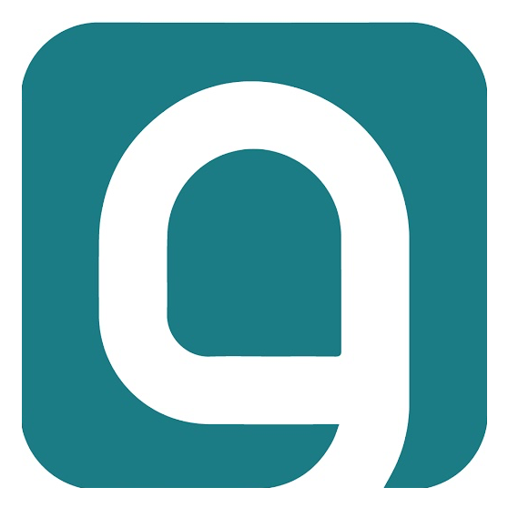

ترقّبوا إطلاق
أكاديمية وجيز
نبحث عن مدرّبين من كافة الدول العربية
خبرة حقيقية
محتوى أصيل
مخرجات عمليّة
نستهدف كافّة المجالات
التقديم مفتوح الآن
تعرف مدرّبا مميّزا؟ رشِّحه لنا
قدِّم عبر الرابط
www.wajeezacademy.com